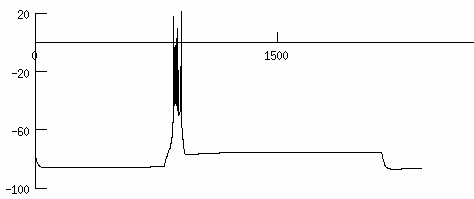
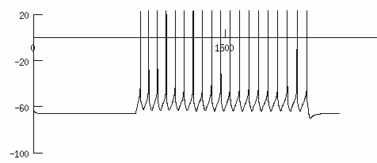

NEURON models from the paper: Experimentally-constrained biophysical models of tonic and burst firing modes in thalamocortical neurons Elisabetta Iavarone, Jane Yi, Ying Shi, Bas-Jan Zandt, Christian O'Reilly, Werner Van Geit, Christian Rössert, Henry Markram, Sean L. Hill PLOS Computational Biology 2019 Usage: Either auto-launch from ModelDB or download and extract the archive and compile the mod files (with mknrndll (mswin and mac, or nrnivmodl (linux/unix)). Start the simulation by typing in a terminal window "nrngui mosinit.hoc" (linux/unix). After selecting one of the buttons, the simulation will reproduce the somatic membrane potential generated by applying different patterns of current stimuli in the tonic and burst firing modes. Examples: clicking on "cNAD_ltb burst" will produce the following graph:  clicking on "cNAD_ltb tonic" will produce the following graph:  The ion channel densities were constrained through evolutionary multiobjective optimization (BluePyOpt library). The code used for the optimization, along with channel densities for the other acceptable models are available under the thalamocortical cell example. The experimental data to constrain the models were provided by Jane Yi, Ying Shi, Laboratory of Neural Microcircuitry (LNMC). The morphologies are available on NeuroMorpho.org under the ODC Public Domain Dedication and Licence (PDDL) https://opendatacommons.org/licenses/pddl/1.0/.